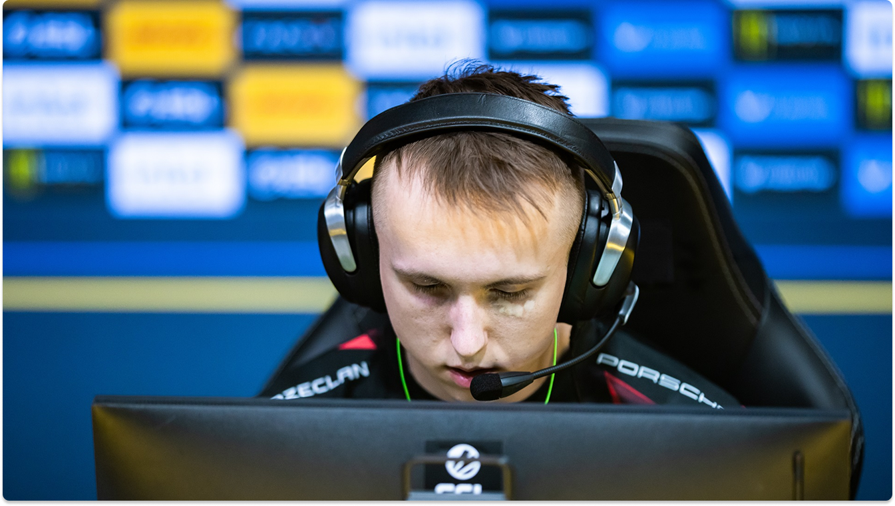
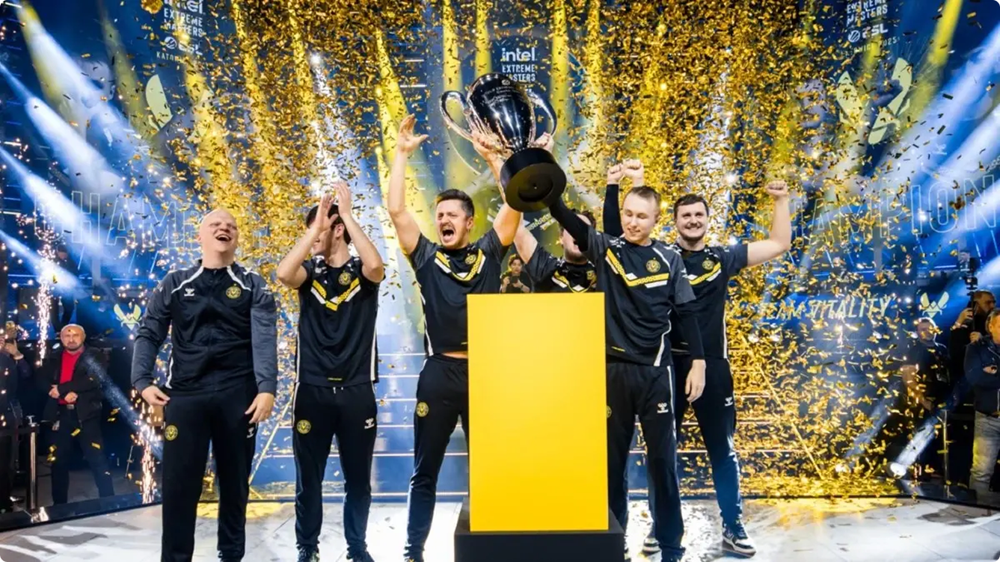

Ropz né et grandis en Estonie, plus précisément à Jõgeva, une petite ville de 5000 habitants. Il est l'ainé d'un fatrie de 4 frères. Son père était agriculteur et cultivait des pois.

A 15 ans, il découvre Counter-Strike Global Offensive, Alors très bon sur CSGO où il joue sur des tournois plateforme ouverte comme FaceIT, il est accusé de tricher par la communauté et par certains joueurs professionnels. Cela a impacté l'envie de Ropz de continuer à jouer. Il a d'ailleurs était invité dans les bureaux de FaceIT afin de prouver sa bonne foi. Une offre de TeamLiquid permet à sa famille de se rassurer pour l'avenir de celui-ci. Finalement, Ropz fera le choix de signé professionnel chez mousesports, cela signe le début de sa carrière dans l'Esport.

Le 1er janvier 2025, il rejoint Team Vitality en remplaçant l'israélien Lotan « Spinx » Giladi, une ère de domination est entrain de se mettre en place avec plus de 21 victoires consécutives en tournois proffesionnel, et plus récemment la remise d'un Intel Grand Slam pour avoir remporter 4 des derniers tournois ESL.